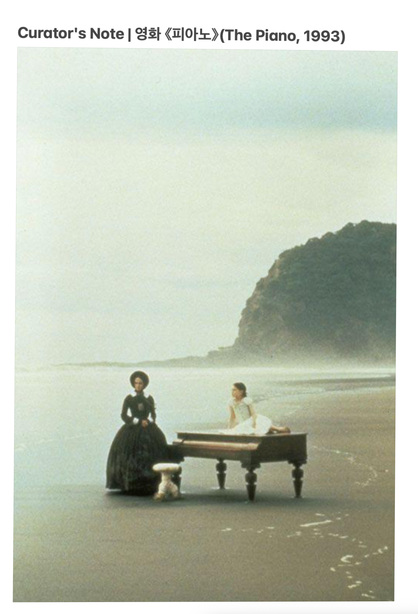

영화 《피아노》(The Piano, 1993)의 촬영지, 뉴질랜드 베델스 비치(Bethells Beach)입니다.
검은 모래와 거친 파도, 그리고 그 앞에 놓인 피아노. 말을 잃은 주인공 에이다는 이 해변에서 가장 깊은 자신의 목소리를 찾았습니다.
침묵은 비어 있는 것이 아니었습니다. 침묵은 그녀가 선택한 언어였습니다.
회색빛 안개가 무겁게 내려앉은 베델스 비치.
파도는 거친 비명처럼 밀려왔다 부서지기를 반복하고 있었습니다. 그 황량한 해변의 한가운데, 검은 궤짝 같은 피아노 한 대가 거대한 이물질처럼 덩그러니 남겨져 있습니다. 에이다의 시선이 천천히 움직여 피아노의 거친 나무 표면에 머물렀습니다.
영국에서부터 이 지옥 같은 바다를 건너오는 동안, 그녀가 할 수 있는 일이라곤 오직 침묵하는 것뿐이었습니다.
세상은 그녀의 입을 막았고, 그녀는 스스로 마음 주변에 단단하고 소리 없는 둑을 쌓아 올렸습니다. 소화되지 못한 멍울들을 그 둑 뒤에 가둔 채, 잔잔한 인형처럼 살아왔습니다.
하지만 눈앞의 피아노를 마주한 순간, 가슴 깊은 곳에서 균열이 일어났습니다. 피아노는 에이다에게 단순한 악기가 아니었기에, 굳게 닫힌 목판 속에는 그녀가 평생 삼켜온 언어들이, 날카로운 자갈처럼 서로를 할퀴며 요동치는 거센 여울이 된 채 갇혀 있었습니다.
건반을 누르는 순간, 둑은 무너질 것이고, 억눌린 감정의 물줄기는 그녀의 전 존재를 휩쓸고 흘러내릴 터였습니다. 갑작스럽게 밀려드는 내면의 범람과 두려움에 에이다의 눈동자가 파르르 떨렸습니다.
에이다는 떨리던 손을 멈추고, 피아노를 향해 천천히 발걸음을 옮기기 시작했습니다. 거친 바닷물이 그녀의 발목을 덮쳐왔지만, 그녀의 시선은 오직 자신의 영혼이 깃든 검은 나무 상자만을 똑바로 응시하고 있었습니다.
조금씩 울컥울컥거리며 차오르던 서러움은 이내 통제할 수 없는 거대한 절망의 낯빛으로 변하기 시작했습니다. 좁은 여울목을 만난 물처럼 감정이 갑자기 목구멍까지 치밀어 올라 파도만큼처럼 세차게 일렁거리며 소용돌이치기 시작했습니다.
끝을 알 수 없는 검은 바닷물이 들이닥쳐 순식간에 모든 것을 집어삼키듯 덮어버렸습니다. 소화되지 못한 멍울에 갇힌 채, 비명조차 지를 수 없을 때,
어디선가 솟구친 절규 꺼이꺼이 꺼어이~
"난 이대로 포기할 수는 없어."
"이렇게 사는 건 더 이상, 삶이라고 부를 수 없어."
"난 꼭두각시가 아니야!"
먹색 슬픔을 뚫고 한맺힌 절규가 솟구치며 술렁였습니다.
검푸른 바다 위에 포근한 바람이 심장을 두드리니 쓰디쓴 물, 깊은 숨을 모아 뿜으니 숨이 쉬어집니다.
베델스 비치의 울림은 정녕 그녀를 깨어나게 했고, 그 음성이 마음의 벽에 메아리치자 소란스러웠던 방황의 외침은 아늑한 밀물과 썰물의 숨소리가 점점 얕아지고 있었습니다.
만조(High Tide)의 시간
베델스 비치의 검은 모래 위, 피아노는 에이다가 자신을 가둔 침묵의 틀이었습니다. 말할 수 없는 격정, 삼켜야 했던 비명을 그녀는 그 거대한 목재 상자 속에 짓이기듯 밀어 넣었습니다.
때 마침 지상의 모든 흔적을 소리 없이 덮어버리고, 영혼의 눈을 멀게 하던 가벽의 설치대 같던 환경을 그런 대로 유지하기에 충분한 시간이 시작되었습니다.
들이닥친 만조는 걷잡을 수 없이 차오른 격정적인 감정의 넓이이자, 사방이 완벽하게 차단되어 꽉 가로막힌 절망의 벽이었습니다. 모든 것을 집어삼키고 모든 감각을 아늑하게 멈추려는 거대한 침묵의 압박 속에서, 바다는 에이다에게 묻고 있었습니다.
이 무디고 안전한 도피처 속으로 영원히 침잠해 들어갈 것인가. 아니면 너 자신으로 살아갈 길을 선택할 것인가.
스스로를 찾고 싶은 인간의 의지만큼은 결코 덮어지지 않았다.
바다의 칠흑 같은 심연으로 가라앉는 피아노. 그 무거운 밧줄에 스스로 발목을 묶었던 에이다는 물속 가장 깊은 암흑 속에서 비로소 살고 싶다는 생의 의지를 발견합니다. 그리고 피아노라는 거대한 허상에 매달려 있던 나 자신의 나약함을 마주합니다.
그 억압의 임계점을 뚫고, 참아왔던 감정들이 가슴속에서 거친 여울이 되어 솟구쳐 올랐습니다. 건반이 부서져라 내리치며 온몸으로 내지르던 격정의 독주곡. 제어 장치가 부서진 채 내면에서 사방으로 흩뿌려지는 날 선 여울의 폭발이 일어났습니다.
살아야 한다. 아니, 나로서 존재해야 한다.
그 순간 비로소 족쇄로부터 풀려납니다.
피아노라는 껍데기는 심연으로 영원히 추락하고, 알몸의 자아는 저 높은 수면을 향해 거침없이 튀어 오릅니다.
허파가 찢어질 듯한 장벽을 뚫고, 에이다는 수면 위로 머리(의지)를 들이밀며 거친 첫 숨을 들이켠다! "하아아-"
그녀의 결단이 만들어낸 족쇄 풀림은, 마침내 격정의 만조가 서서히 물러가는 시점과 자연스럽게 맞물려 들어갔습니다.
소리 없이 덮어누르던 거대한 물살들이 가라앉고 비워진 자리에, 바다는 감추어두었던 진짜 길의 모습을 온전히 드러냈습니다.
거창한 선언도 계획도 없이, 젖은 몸으로 드러난 대지에 누워 새벽하늘을 보는 찰나. 밀물과 썰물에 따라 나타났다 사라지기를 반복하는 그 길은, 보이지 않던 만조의 순간에도 내 본질은 언제나 수면 아래 존재하고 있었다는 위로입니다. 바다 위에 마침내 나타난 그 길은, 오늘부터 오롯이 자기 자신으로 살아갈 작은 권리의 시작입니다.
동트는 해안선 너머로, 수면 아래 묻어둔 그녀의 진정한 Self가 다정하게 찾아와 말을 건넵니다.
"이제 네 목소리로 숨을 쉬어도 돼, 피아노로 대체하지 않아도 괜찮아. 그 아름다운 선율을 연주해 낼 수 있었던 네 자신이 바로, 네가 평생 누릴 가장 큰 특권이니까." 라고.
모든 것을 비워내고 길을 내어준 바다는 그녀가 내뿜은 거칠고 자유로운 호흡을 품고, 비로소 가장 완벽한 평온 속으로 자신을 풀어놓습니다.
몽생미셸의 멤은 가로의 길이었습니다. 바다가 밀려왔다 물러가며, 길은 사라졌다 다시 드러납니다. 그 길은 언제나 거기 있었지만, 우리는 물이 빠질 때만 그것을 볼 수 있었습니다.
레쉬는 그 드러남이 안이 아니라, 세로로 일어나는 길입니다. 예소드에서 티페렛으로, 가장 낮은 물속에서 가장 밝은 중심으로.
베델스 비치의 피아노는 닫힌 멤이었습니다. 밀물이 완전히 차오르면, 아무도 그 아래 무엇이 있는지 볼 필요가 없어집니다. 숨는 것이 오히려 안전하게 느껴지는 시간. 에이다는 자신의 목소리를, 삼켜야 했던 것들을 그 검은 나무 상자 속에 밀어 넣었습니다. 피아노는 더 이상 악기가 아니라, 그녀 자신이어야 했던 무언가를 대신 짊어진 그릇이 되었습니다.
그것이 투사입니다. 스스로 감당할 수 없다고 느낀 자신의 일부를, 바깥의 어떤 대상에게 옮겨 놓는 일. 에이다에게 그 대상은 피아노였습니다. 목소리를 피아노에게 넘겨주는 동안, 그녀는 안전했지만, 동시에 자기 자신에게서 점점 멀어지고 있었습니다.
만조는 그 거리가 가장 멀어진 순간입니다. 완전히 덮이고, 완전히 숨겨진 시간. 하지만 밀물은 언제까지나 차 있지 않습니다. 물이 물러가려면, 먼저 넘겨주었던 것을 다시 데려와야 합니다. 그것이 회수입니다. 에이다가 검은 나무 상자를 향해 다시 걸어 들어간 것은, 피아노에게 맡겨두었던 자신의 목소리를 다시 찾아오는 일이었습니다.
여울, 좁은 목을 지나며 거세지는 물살은 밖에서 온 것이 아니라 그녀 안에 이미 있던 것이었습니다. 오래 눌려 있던 것일수록, 되찾아 올 때는 더 거칠게 솟구칩니다.
수면 위로 올라와 첫 숨을 들이켜는 순간, 에이다는 자신이 지키려 했던 것이 사실은 자기 자신이 아니라 자신을 대신하던 껍데기였음을 압니다. 껍데기는 심연으로 가라앉고, 그녀는 마침내 자신에게 돌아옵니다.
그 자리가 티페렛입니다. 예소드의 물속에서 시작된 길이, 회수를 거쳐 마침내 도착하는 중심. 열린 멤이 길을 다시 보여주듯, 레쉬는 그녀에게 그녀 자신을 다시 보여줍니다. 그리고 그 자리에서 그녀는 자신이 아니라, 자신을 넘어선 것 - Self를 만납니다.
이는 영화가 직접 말하는 결론은 아닙니다. 제가 이 장면을 보며 그렇게 읽었을 뿐입니다.